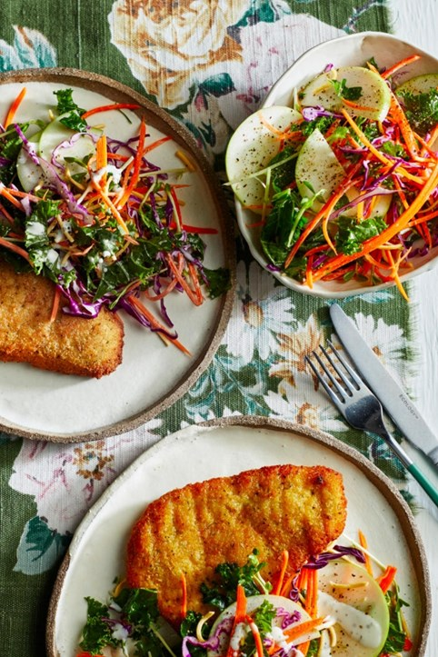

Chicken Schnitzel

Looking for a quick and easy chicken dinner recipe? Fry up ready-crumbed schnitzels until golden brown and toss a bag of kale slaw with fried noodles, apple slices and snow peas for a crunchy salad on the side.
Ingredients
- 4 crumbed chicken schnitzels
- 450g bag kale slaw, with dressing
- 100g fried noodles
- 1 green apple, cored, thinly sliced
- 50g snow pea sprouts
Instructions
- In a large frying pan, heat enough vegetable oil to shallow fry on medium. Cook schnitzels for 3-4 minutes on each side, until golden brown. Drain on paper towel.
- Meanwhile, toss slaw with fried noodles, apple and sprouts. Toss dressing through.
- Serve schnitzels, halved, with crunchy slaw. Accompany with lemon wedges, if desired.
Cook's notes
*Add the dressing just before serving so the kale slaw doesn’t go soggy
Enjoy!!!!